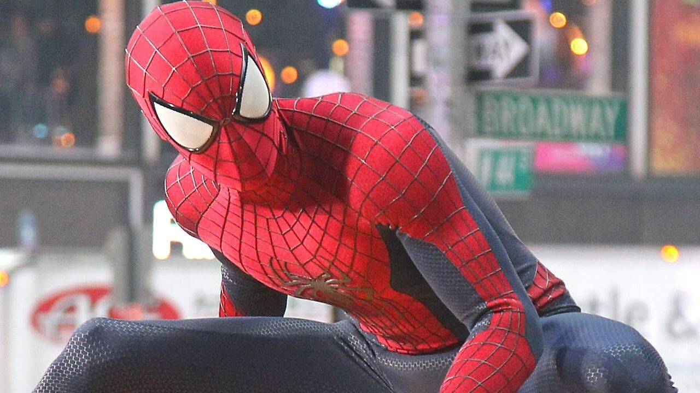

I chose to do green as my background because in the first spider-man mive is eyes were green before they changed into white in the second film.Andrew Garfield's Spider-Man was the second Movie of Spider-Man movies ever in theaters. Andrew Garfield said "playing Spider-Man was a very heartbreaking for him". People was upset about the behavior of Andrew Garfield. It was also because the box office didn't do to well for the second film. He also wanted to play Spider-Man in other future MCU movies, but he got fired after the the second film. However Andrew Garfield returned to play Spider-Man in No Way Home and was one of the most cheered in movies. People around the world right now wants to see The Amazing Spider-Man 3 of how popular it is.
Sources
- gamerant
- This website explains how heartbreaking it was for Andrew Garifield playing Spider-Man.
- hindustantimes
- This website explains why Andrew garfield was fired as Spider-Man and later replaced by Tom holland.
- cheatseat
- This website explains why Andrew Garfield was upset he count save his franchise.